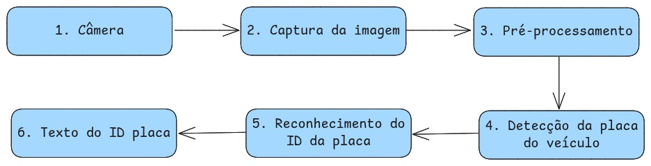

Roteiro do Laboratório Experimental – Sistema de Reconhecimento de Placas
Este roteiro orienta a execução, coleta de resultados e avaliação do sistema de leitura automática de placas de veículos.
Introdução
O que o sistema faz: detecta regiões de placa em imagens ou vídeo e aplica OCR para extrair o texto. A interface principal, no modo câmera, mostra o vídeo ao vivo com caixas nas regiões detectadas, o texto da placa confirmado e o FPS no canto superior direito.
Modos de uso
- Imagem estática: executar passando o caminho da imagem; retorna as placas detectadas no terminal.
- Câmera em tempo real: abrir a janela de vídeo, detectar a placa periodicamente e exibir a última placa confirmada na sobreposição.
Atalhos da janela: q sair, d alterna debug, p pausar/continuar.
Como o OCR funciona
- Motores de OCR: Tesseract, EasyOCR ou Dual (ambos).
- Execução paralela: OCR roda em processos separados para não travar a UI.
- Presets: rápido (padrão) ou ultra (mais FPS, menos acurácia).
- Validação: formata e valida placas no padrão brasileiro (ABC-1D23 / ABC-1234).
Diagrama de Blocos
Fluxo: Câmera ▶ Captura ▶ Pré-processamento ▶ Detecção de placa ▶ OCR ▶ Exibição/Registro.
Parâmetros principais (CLI)
| Parâmetro | Descrição | Exemplo |
|---|---|---|
--camera | Usa câmera em tempo real | --camera |
--cam-index | Índice da câmera | --cam-index 0 |
--ocr-engine | tesseract | easyocr | dual | --ocr-engine dual |
--ultra | Preset Ultra (mais FPS) | --ultra |
--no-haar | Desativa Haar Cascade (usa contornos) | --no-haar |
--pool-size | Nº de processos de OCR | --pool-size 2 |
--debug | Logs detalhados | --debug |
image_path | Imagem para modo estático | placa.jpg |
Procedimento experimental
A) Modo Imagem Estática
- Separe um conjunto de algumas imagens contendo placas (ângulos e iluminações variadas). Crie uma pasta
amostras/e nomeie os arquivos sequencialmente (ex.:img01.jpg…img10.jpg). - Execute para cada imagem:
python3 plates_recognizer.py --ocr-engine easyocr amostras/img01.jpg - Registre a saída impressa no terminal (ex.: Placas detectadas: ["ABC-1D23"])
- Repita com
--ocr-engine tesseracte depois com--ocr-engine dual.
B) Modo Câmera em Tempo Real
- Conecte a câmera. Garanta boa iluminação e enquadramento frontal do veículo/placa.
- Execute:
python3 plates_recognizer.py --camera --cam-index 0 --ocr-engine easyocr - Observe na janela: caixas nas regiões de placa e uma tarja com Placa: <texto> e o indicador de FPS.
- Assim que a placa for confirmada, registre a leitura exibida.
- Repita com
--ocr-engine tesseracte--ocr-engine dual.
Resultados esperados
- Saída no terminal com a lista de placas detectadas no modo estático.
- Janela de vídeo com retângulos nas regiões candidatas; sobreposição com texto da placa confirmada e FPS.
- Logs de debug opcionais indicando início/fim de tarefas de OCR assíncronas.
Questionário
Escolha apenas uma opção dentre as alternativas
- Qual é o objetivo principal de um sistema de reconhecimento de placas de veículos (LRP)?
- Quais são as duas principais fontes de imagem que um sistema de LPR pode utilizar para análise
- Antes de tentar ler os caracteres, o que o sistema precisa fazer primeiro na imagem de um veículo
- Qual é o nome da tecnologia usada para converter a imagem dos caracteres da placa em texto digital?
- Após extrair o texto da placa, por que é importante ter uma etapa de validação e formatação?